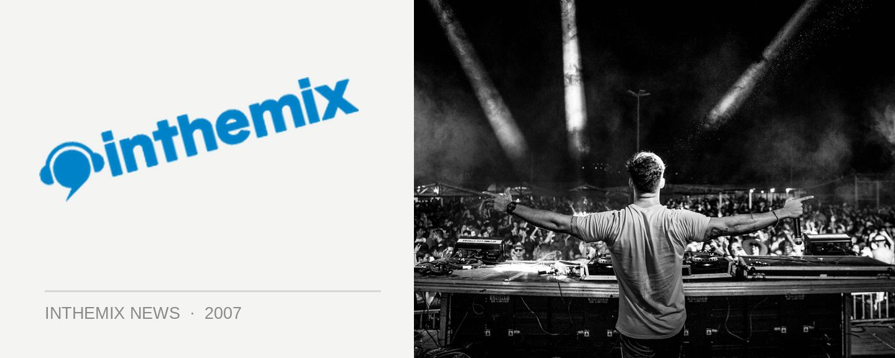

Get ‘Knocked Up’ at The Burdekin
Want to party somewhere which a music policy that extends beyond the current electro house wave that is dominating Sydney? Well get on down to Knocked Up. Expect to hear a diverse range of dance music that goes from progressive to electro, party breaks, deep house as well as guest MCs and musicians to spice things up.
Some of the names appearing behind the decks will include Whisper, Pride, Andrew Wowk, Imperial, Strepta, Messy and more. The promoters are promising a funky and fresh Saturday night that goes above and beyond just quality DJs.
Get on down to the second installment of Knocked Up, Saturday November 3rd from 9pm at The Burdekin on Oxford Street.